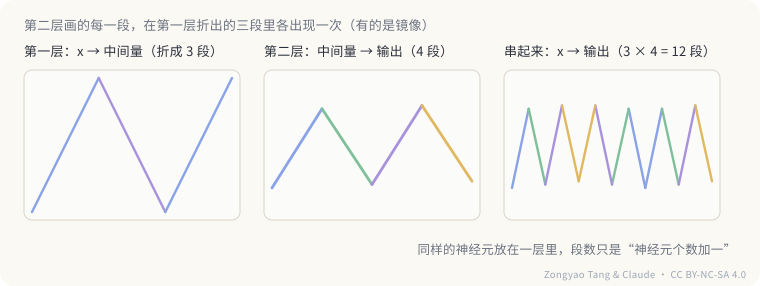
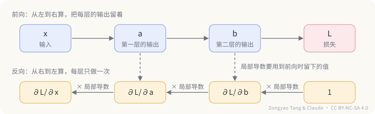

线索是：先看一个最简单的神经网络到底算出了什么样的函数 → 再看把它加深为什么比加宽更有效 → 有了网络，怎样算出每个参数该往哪个方向调，这就是反向传播 → 最后是反向传播里一条容易被忽略、但后面处处用到的规则。这一单元是整门课的起点：后面所有的 GPU 优化，优化的都是这里的前向和反向。
第 1 部分 · 深度学习原理1.1 神经网络与反向传播
这一单元回答神经网络到底在算什么？梯度是怎么一层层算回来的？
整门课的起点：后面所有的 GPU 优化，优化的都是这里的前向和反向计算。
讲解
1ReLU 网络把输入空间切成许多块，每块里是一个线性函数
一个隐藏层的 ReLU 网络，每个神经元在输入空间里画一条“折线”，合起来就是一个分段线性函数：隐藏单元越多，分段越多，能拼出的曲线越复杂。没有激活函数，叠多少层都只是一次线性变换。
从一个神经元看起。 一个神经元做两件事：先对输入做一次线性运算（乘权重、加偏置），再过一个激活函数。ReLU 是最简单的激活函数：输入大于零原样输出，小于零输出零。所以一个 ReLU 神经元的输出，画出来是一条“折线”：一边是平的（零），另一边是一条斜线，折点的位置由权重和偏置决定。
把几个神经元加起来。 单隐藏层网络的输出，是若干个这样的折线各乘一个系数再相加。每条折线贡献一个折点。折点之间，每条折线要么是平的、要么是斜的，加起来还是一条直线。所以整体是一个分段线性函数：D 个隐藏神经元，最多 D 个折点，D+1 段。
输入是一维时，这是一条由直线段拼成的曲线。输入是高维时，每个神经元的“折点”变成一个超平面，把输入空间切成两半；很多个超平面把空间切成很多块，每一块里函数是线性的。
为什么能逼近任何函数。 任何连续的曲线，都可以用足够多的短直线段去贴近它，段越多贴得越准。神经元越多，可用的段就越多。这就是“万能逼近定理”的直观含义。它说的是“存在这样一组权重”，至于训练能不能找到它，是另一回事（1.2）。
为什么激活函数不可少。 把激活函数去掉，每一层都只是线性运算。线性运算套线性运算，结果还是一个线性运算：两个矩阵相乘得到的仍是一个矩阵。一百层这样的网络，表达能力和一层完全一样，只能表示一条直线（一个超平面）。是 ReLU 的那一“折”，让每加一个神经元都能多出一段。
和后面的联系。 从系统的角度，这一节解释了一个网络层在计算上是什么：一次矩阵乘法（线性部分），加一次逐元素的运算（激活函数）。4.1 把 Transformer 拆成算子时，看到的仍然是这两类：矩阵乘法占了运算量，逐元素的运算占了显存的读写。
打个比方像用很多段直尺去拼一条曲线：尺子越多，拼得越像。
所以非线性激活是神经网络表达能力的来源；“神经网络能拟合任意函数”说的就是：分段足够多，就能逼近任何连续函数。
后面会用到 深度的威力：每加一层，就把空间再“对折”一次- 加神经元可以增加分段。但同样多的神经元，排成很多层比排成一层更有效。
2深度的威力：每加一层，就把空间再“对折”一次
深层网络的前一层把输入空间“折叠”起来，后一层在折叠后的空间里画的线，会被复制到所有折在一起的位置上。因此线性区域的数量可以随层数成倍增长，而加宽一层只能线性地增加。
两层串起来会怎样。 设第一层把输入 x 变成一个分段线性的中间量，比如一个“锯齿”：x 从左到右时，中间量上去、下来、再上去。于是输入的三个不同的区间，被映射到了中间量的同一段取值范围上。可以说第一层把输入轴“折”了三折，叠在了一起。
第二层再在这个中间量上画一个分段线性函数，比如有 4 段。因为三个输入区间共用同一段中间量，第二层画的这 4 段，在三个区间里各出现一次（有的是镜像）。最后得到的函数有 3 × 4 = 12 段。而两层加起来用的神经元并不多。

第一层把输入轴折成三段叠在一起，第二层画的 4 段在每一折里各出现一次：3 × 4 = 12 段 对比。 同样的神经元如果全放在一层里，段数只是“神经元个数加一”，是相加的关系。分成两层，段数是相乘的关系。层数越多，乘的次数越多：线性区域的数量可以随深度指数增长，而随宽度只是线性增长。UDL（Simon Prince 的《Understanding Deep Learning》，作者在网上免费提供全书）第 4 章的图 4.1 和图 4.3 画的就是这个折叠的过程。
但这些段不是任意的。 那 12 段不是 12 个可以独立调整的线段：后面一层画的图案在每个“折”里是重复的。所以深层网络擅长表示有重复结构、有层次的函数。现实中的数据（图像由部件组成，部件由边缘组成；句子由短语组成，短语由词组成）恰好有这种层次结构，这是深度网络在实践中有效的一个解释。
深度的代价。 层数多了，训练变难：信号和梯度要穿过很多层，容易消失或爆炸（1.2 的初始化、1.4 的残差连接）。计算上，深度意味着这些层必须一层接一层地算，不能并行。所以 GPU 的并行性用在每一层的内部（一层里的很多神经元、一个 batch 里的很多样本同时算），而不是层与层之间。7.3 的流水线并行按层切开模型时遇到的“气泡”，根源就是层与层之间这种先后依赖。
打个比方像把一张纸反复对折后剪一刀：展开时得到的是许多对称的剪口。折的次数越多，一刀剪出的花样越多。
所以同样多的参数，深而窄的网络往往比浅而宽的网络表达能力更强；这也是“深度学习”里“深”的意义。
- 网络能表示复杂的函数。接下来的问题是：怎样知道每个参数该往哪个方向调，才能让损失变小？
3反向传播 = 链式法则 + 记账
前向计算时记下每一步的中间结果；反向时从损失出发，每个节点把“上游传来的梯度”乘上自己的局部导数，再传给它的输入。每个中间结果只算一次、被重复利用，所以求出所有参数的梯度，只比前向多花一到两倍的计算。
要算的是什么。 损失 L 是所有参数的函数。对每个参数 w，我们要知道 ∂L/∂w：w 增加一点点，L 会变多少。有了它，就把 w 往让 L 减小的方向挪一点。一个模型有上亿个参数，要对每一个都算出这个量。
笨办法。 把某个参数加一个很小的数，重新算一遍前向，看损失变了多少。每个参数要一次完整的前向，上亿个参数就是上亿次。不可行。
链式法则。 网络是一层套一层的复合函数。以三层为例：输入 x → a（第一层的输出）→ b（第二层的输出）→ L。链式法则说：L 对 a 的导数 = L 对 b 的导数 × b 对 a 的导数。也就是说，想知道损失对某一层的敏感程度，只要知道损失对后一层的敏感程度，再乘上“后一层对这一层的局部导数”。
于是从后往前算。
- 先算 ∂L/∂b（最后一层，直接可得）。
- 用它算 ∂L/∂a = ∂L/∂b × ∂b/∂a。
- 再往前，依此类推。
- 每经过一层，顺便算出损失对这一层参数的梯度：它也是“上游传来的梯度 × 这一层输出对参数的局部导数”。
每一层只做一次，用的是后一层已经算好的结果。整个过程的运算量和一次前向是同一个量级（大约两倍），就得到了全部参数的梯度。这就是“记账”的含义：算过的中间结果不再重算。

三层的例子：反向每一步都用到后一层已经算好的结果 为什么要保存前向的中间结果。 局部导数依赖前向时的值。比如一层是 b = W × a，那么 ∂L/∂W 等于“上游梯度”和“a”的乘积；ReLU 的导数取决于它的输入当时是正还是负。所以反向经过每一层时，都要用到这一层前向时的输入或输出。前向必须把它们留着。
这一条贯穿了后面的很多单元：
- 2.2：PyTorch 怎样在前向时自动记下这些东西。
- 2.1：训练显存里最大的一笔账“激活值”就是它们。
- 1.5 的 6N：前向约 2N 次运算，反向约 4N 次（对输入和对权重各算一份梯度）。
- 4.4、4.2：不想保存时，可以反向时重算。
Karpathy 的 micrograd 视频用一百来行 Python 实现了这整套机制，对象是单个的数而不是张量。原理和 PyTorch 完全相同，是理解 2.2 最好的预备。
打个比方像倒查一笔账：从最终结果往回问，每一步对结果贡献了多少，再把这个答案交给上一步继续往回查。
所以训练必须保存前向的中间结果（activations），这是训练比推理占显存多得多的主要原因；后面的 activation checkpointing 和 Flash Attention 的重算，都是在用“再算一遍”换显存。
- 链式法则讲的是一条链。实际的网络里，一个值常常被用在不止一处。
4一个值被用了几次，梯度就要加几次
如果一个节点同时流向两条路径，它对损失的影响是两条路径影响之和，所以反向时两路梯度要相加（micrograd 里的 +=）。
规则。 如果一个值 a 同时影响了 b 和 c，而 b、c 又都影响损失 L，那么 a 对 L 的影响是两条路径的影响之和：∂L/∂a = (经过 b 的那一份) + (经过 c 的那一份)。
直观上：a 增加一点点，b 变了一点，c 也变了一点，两者各自让 L 变化一些，总的变化是两者相加。
什么时候会出现。 比想象的常见得多：
- 残差连接（1.4）：x 既直接加到输出上，又经过一个模块。x 的梯度是两路之和。这正是残差连接让梯度容易回传的原因：其中一路是“直通”的，不经过任何变换。
- 权重共享：同一组权重在序列的每个位置都用了一次，它的梯度是所有位置贡献的总和。
- 一个 batch：每个参数被 batch 里的每个样本都用了一次，梯度是所有样本的贡献之和（再取平均）。
在 micrograd 和 PyTorch 里。 实现上就是“累加”：反向经过一个节点时，不是把梯度赋值给它的输入，而是加到输入已有的梯度上。micrograd 里那个
+=就是这条规则。2.2 讲的引擎在执行一个节点之前要等“所有上游的梯度都到齐”，也是为了把它们先加起来。三个直接的后果。
- *每一步要清零。* PyTorch 里参数的
.grad是累加的。上一步的梯度如果不清掉，这一步的会加在它上面。所以训练循环里有optimizer.zero_grad()。忘了它是一个经典的错误：模型能训练，但很不稳定。 - *梯度累积。* 反过来利用这一点：连续做几次“前向 + 反向”而不清零，梯度自然地加在一起，相当于一个更大的 batch。显存不够放大 batch 时用它（1.3）。
- *分布式训练的数学基础。* 多张卡各自算出梯度再求和（或平均），和一张卡算一个大 batch 得到的梯度完全相同。因为梯度本来就是各样本贡献的和，求和的顺序、在哪里求和都不影响结果。7.1 的数据并行、6.1 的 all-reduce，都站在这一条上。
所以这条看起来很小的规则，是“为什么可以把训练拆到很多张卡上”的根本原因。
打个比方像一个人同时为两个项目工作，他的总贡献是两个项目里贡献的总和。
所以 PyTorch 的梯度默认是累加的，每一步训练前要 zero_grad()；也正因为可以累加，“梯度累积”才能把几个小批次当成一个大批次来训练。
串起来
带 ReLU 的网络算出的是一个分段线性的函数，神经元越多，段越多。加深让段数成倍地增长。反向传播是链式法则加上记账：前向保存中间结果，反向从损失出发逐层往回乘，所有参数的梯度一趟算完。一个值被用了几次，它的梯度就是几条路径之和。
考考自己
不看讲解，用自己的话讲一遍。
- 一个带 ReLU 的单隐藏层网络，表示的是什么样的函数？为什么没有激活函数的网络再深也没用？
- 为什么深层网络比同样参数量的浅层网络表达能力更强？“折叠”这个比喻是什么意思？
- 反向传播是怎样一趟算出所有参数的梯度的？为什么它要求保存前向的中间结果？
- 一个中间值被多处使用时，它的梯度怎么算？这条规则在 PyTorch 里有哪些直接的后果？
术语
- backpropagation
- 反向传播
- computational graph
- 计算图
- activation function
- 激活函数
- gradient
- 梯度